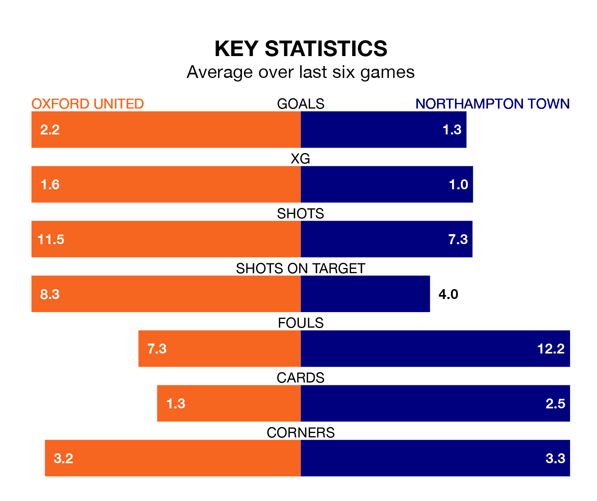

Northampton Town travel to Oxford United on Saturday in EFL League One.
The visitors come into the game on the back of a draw in their last match, having tied with Wigan Athletic 1-1 at home, with a goal from Sam Hoskins.
The Us, meanwhile, won their last match, 3-1 against Carlisle United, with their goals scored by Mark Thomas Harris and Tyler Goodrham.
With 45 goals in 26 games so far this season, Oxford are scoring more than average in the league with 1.7 goals per game. And they are conceding fewer than average, letting in 30 goals at a rate of 1.2 per game.
Northampton, meanwhile, are below average scorers, with 1.2 goals per game, compared to a league average of 1.3. They have conceded 1.3 goals per game.
In the last 10 years, Oxford and Northampton have played each other on 11 occasions. Oxford won two of them, Northampton seven, and they drew twice.
On average, the Us scored 0.9 goals and the Cobblers 1.0 in those matches.
Their last meeting was on December 23, when Northampton won 2-1 at home.
United are sixth in the table after 26 games, of which they have won 15 and drawn four, earning 49 points.
Town are three places behind the Us in ninth, with 11 wins and four draws putting them on 37 points.
In Hoskins, the Cobblers have one of the league's sharpest shooters so far this season. He has notched 13 goals in 24 appearances, to sit fifth in the scoring charts.
His goal rate of one every 162 minutes is quicker than that of Cameron Brannagan, the home team's top scorer with a goal every 298 minutes, and a total of seven goals in 24 games.
Oxford are in reasonable form in EFL League One, with four wins and two losses from their last six games.
With three wins and two draws over that period, the visitors' form is slightly worse – they have taken 11 points from 18, compared to Oxford's 12.
Updated: 06:13 (UTC), 18/01/24